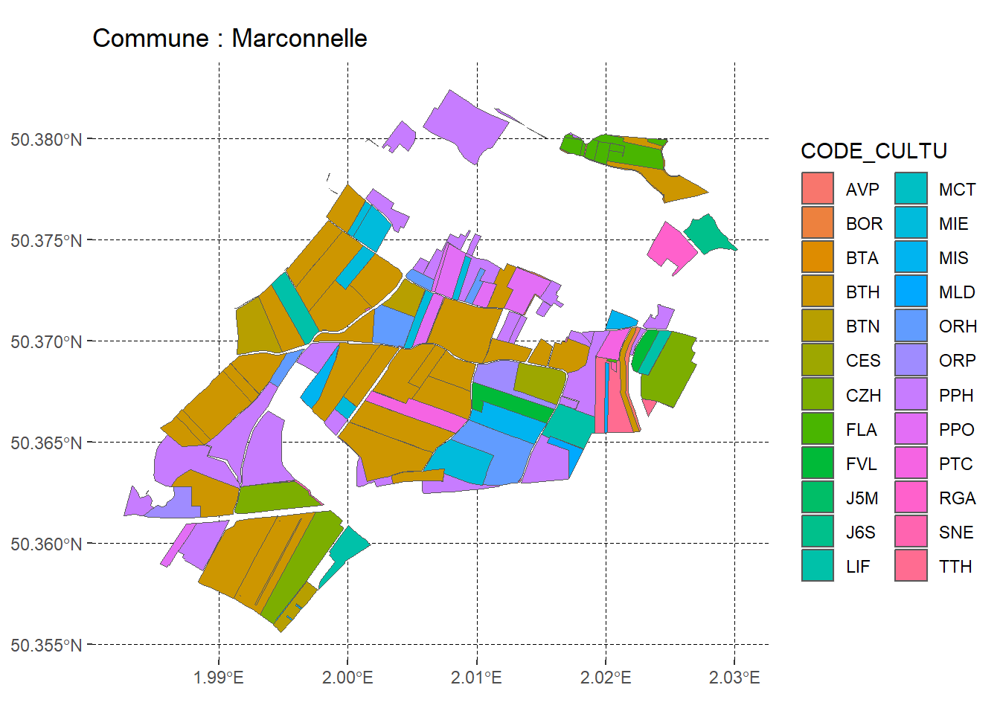

2 leaflet
2.1 Récupération des données rpg pour une commune aléatoire des Hauts-de-France
2.1.1 Récupération des données relatifs aux cultures
2.1.2 Récupération des limites communales d’OpenStreetMap au 1er janvier 2022
2.1.3 Chargement des données RPG des Hauts de France
data_rpg_geo_HDF <- sf::st_read("DATA/RPG_2-0__SHP_LAMB93_R32_2022-01-01/PARCELLES_GRAPHIQUES.shp")
data_rpg_geo_HDF_code_cultu <- data_rpg_geo_HDF |>
dplyr::select(CODE_CULTU) |>
dplyr::left_join(data_ref_culture, by = dplyr::join_by(CODE_CULTU == CODE_CULTURE))
# crs <- st_crs(data_rpg_geo_HDF_code_cultu) 2.1.4 Sélection aléatoire d’une commune et affichage des données RPG associées
code_insee = sample(codes_insee, 1)
commune <- limites_communales |>
dplyr::filter(insee == code_insee)
nom_commune <- commune$nom
commune_geo <- sf::st_geometry(commune)
zone_lambert <- sf::st_transform(commune_geo, crs = "EPSG:2154")
inter_2154 <- sf::st_intersection(data_rpg_geo_HDF_code_cultu, zone_lambert)
inter_wgs84 <- sf::st_transform(inter_2154, crs = "EPSG:4326")
ggplot() +
ggplot2::geom_sf(data = inter_wgs84, aes(fill = CODE_CULTU)) +
ggplot2::labs(
title = paste("Commune :", nom_commune)
) +
ggplot2::coord_sf(expand = TRUE) +
theme(
panel.background = element_rect(fill = "transparent", color = NA),
plot.background = element_rect(fill = "transparent", color = NA),
panel.grid.major = element_line(linewidth = 0.1, color = "black", linetype = "dashed"),
# legend.background = element_rect(fill = 'transparent'), #transparent legend bg
# legend.box.background = element_rect(fill = 'transparent') #transparent legend panel
title = element_text(color = "black")
)
pal <- colorFactor(palette = "YlOrRd", domain = inter_wgs84$CODE_CULTU)
leaflet(inter_wgs84) |>
leaflet::addTiles() |>
leaflet::addPolygons(color = NA,
fillColor = ~ pal(CODE_CULTU),
fillOpacity = 0.5,
popup = ~paste(LIBELLE_CULTURE, CODE_CULTU)) |>
leaflet::addLegend(pal = pal, values = ~ CODE_CULTU, opacity = 0.5)